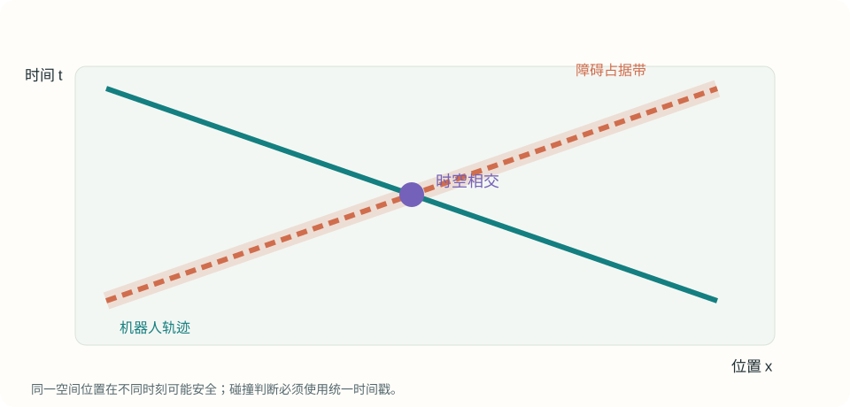
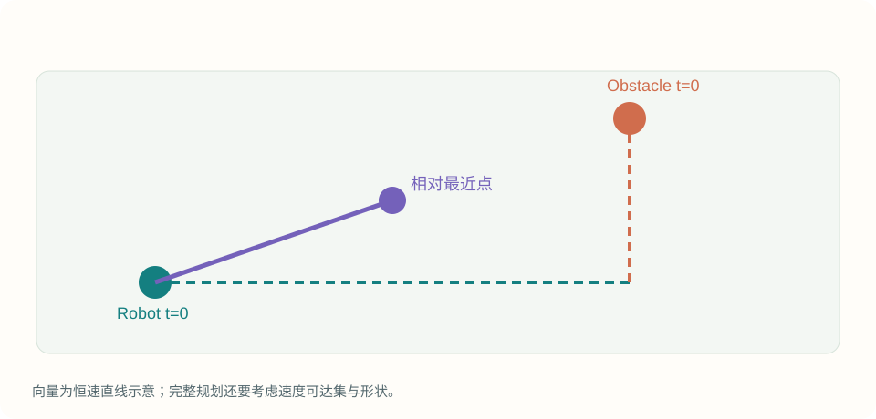
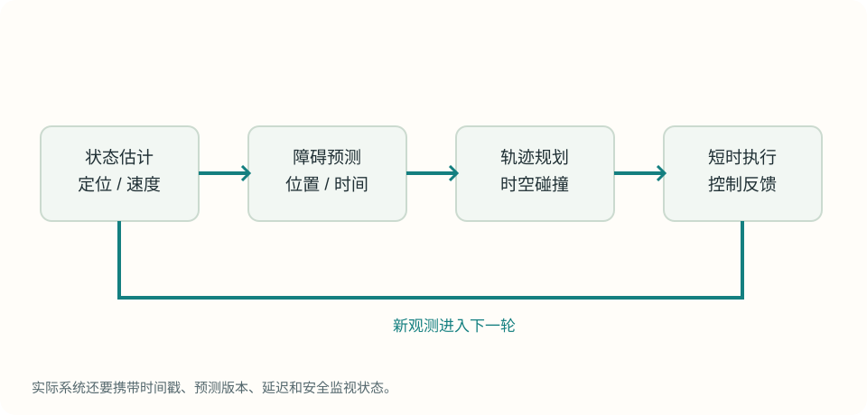

动态环境：机器人和障碍必须在同一时刻被比较
把时间纳入状态和碰撞检测，使用相对运动预测最近接近时刻，并通过滚动时域把传感器更新、在线规划和短时执行组成闭环。
一条静态地图上的安全路径，几秒后可能就不安全
静态路径规划把障碍物看成固定几何区域；真实环境中的行人、自行车、叉车和其它机器人却会移动。若只检查机器人当前位姿与障碍物当前位姿是否分离，就可能接受一条未来必然相撞的轨迹。动态规划需要同时回答：机器人和障碍物在同一时刻会在哪里？
动态环境中，障碍物不仅有位置，还有速度和预测轨迹。规划对象因此从空间曲线扩展为时间参数化运动；同一空间位置在不同时间可能安全，也可能被另一个物体占据。
ROBOT MOTION PLANNING · 19

把时间加入状态，碰撞就变成时空轨迹相交
对二维移动机器人，一个简化的时空状态可写成 (x,y,t)；车辆还需要朝向、速度等状态。若机器人轨迹为 p_r(t)，障碍物预测轨迹为 p_o(t)，圆形近似下只要存在未来时刻满足中心距离小于两者半径之和，就发生碰撞：
注意这里必须使用同一个时间 t。机器人在 t=1 秒到达某个点、障碍物在 t=4 秒经过同一点，不构成碰撞；反之，两个物体当前相距很远，也可能在未来相遇。
ROBOT MOTION PLANNING · 19

用相对运动求最近接近时刻
在短预测区间内把机器人和障碍物近似为恒定速度。定义相对位置 r₀=p_o(0)−p_r(0) 和相对速度 v_rel=v_o−v_r，则相对位置随时间变化：
使平方距离最小的时间为 t* = −(r₀·v_rel)/||v_rel||²，再截断到预测窗口 [0,T]。将 r(t*) 的长度与两物体半径和比较，即可检测恒速圆盘模型下的最近接近风险。
Velocity Obstacles 方法进一步在速度空间中表示会导致未来碰撞的机器人速度集合，并与机器人动力学可达速度集相交。它与时空搜索有联系，但不是简单地把障碍当前点画成一个圆。
ROBOT MOTION PLANNING · 19

滚动时域：执行一小段，更新世界，再重新规划
在线系统通常不一次性执行完整的长时域计划，而是采用 receding-horizon 流程：估计自身状态、更新传感器和障碍预测、生成候选轨迹、进行时空碰撞检查、执行短时间控制，然后重新观测。新观测会改变未来的可行空间，下一次规划可以修正路线。
- 状态估计：统一机器人位姿、速度、时间戳与坐标系。
- 障碍跟踪：估计位置、速度、尺寸和预测不确定度。
- 候选预测：对候选控制生成时间参数化轨迹。
- 风险筛选：检查机器人扫掠体与障碍预测包络是否在同一时刻相交。
- 重规划触发：路径被阻断、风险超阈值、预测偏差扩大或计划过期时重新求解。
- 短时执行：只执行计划的前一小段，再进行下一次闭环更新。
ROBOT MOTION PLANNING · 19

D* Lite 能复用图搜索信息，但不会自动预测行人未来位置
D* Lite 是增量启发式搜索算法：当图中的边代价或可通行状态变化时，它复用之前搜索结果并局部修复受影响的状态。它适合“地图更新后，怎样少做重复搜索”这一类问题。
移动障碍预测回答的是另一件事：“在机器人抵达某位置的那个时刻，障碍是否也在那里？”若把动态障碍仅标成当前帧中的占据栅格，再调用 D* Lite，算法并不会凭空知道该障碍未来会移动到哪里。实际系统可以组合跟踪预测、时空碰撞检查和增量搜索，但三者的职责必须明确。
用解析最近接近计算揭示静态快照的盲点
Python 3.10+，仅使用标准库。机器人从 (0,0) 以 1 m/s 向右走，障碍物从 (2,1) 以 0.5 m/s 向下移动。当前中心距约为 2.236 m，但两秒后相对位置为零。代码还测试一组保持 2 m 横向间距的平行运动作为安全对照。
import math
def closest_approach(robot_p,robot_v,obstacle_p,obstacle_v,horizon):
"""Constant-velocity disks; returns (time, center distance)."""
r0=(obstacle_p[0]-robot_p[0],obstacle_p[1]-robot_p[1])
v_rel=(obstacle_v[0]-robot_v[0],obstacle_v[1]-robot_v[1])
speed2=v_rel[0]**2+v_rel[1]**2
if speed2<1e-12:
t=0.
else:
t=max(0.,min(horizon,
-(r0[0]*v_rel[0]+r0[1]*v_rel[1])/speed2))
relative=(r0[0]+v_rel[0]*t,r0[1]+v_rel[1]*t)
return t,math.hypot(*relative)
robot_radius=.20
obstacle_radius=.20
# At t=0 the centers are sqrt(5) apart: a static snapshot looks clear.
t0=math.hypot(2.,1.)
assert t0>robot_radius+obstacle_radius
# But the obstacle moves down while the robot moves right.
t_star,d_min=closest_approach(
robot_p=(0.,0.),robot_v=(1.,0.),
obstacle_p=(2.,1.),obstacle_v=(0.,-.5),
horizon=4.0
)
assert abs(t_star-2.)<1e-9
assert d_min<robot_radius+obstacle_radius # predicted collision
# A second obstacle moving parallel at a fixed offset remains separated.
t_safe,d_safe=closest_approach(
robot_p=(0.,0.),robot_v=(1.,0.),
obstacle_p=(2.,2.),obstacle_v=(1.,0.),
horizon=4.0
)
assert d_safe>robot_radius+obstacle_radius
print("initial center distance:",round(t0,3))
print("predicted closest approach:",t_star,"s at",round(d_min,3),"m")
print("parallel motion minimum distance:",round(d_safe,3),"m")该例假设双方在整个预测区间内恒速直线运动、形状为圆盘且状态时间同步。它是碰撞时间计算单元测试，不是带噪声的多目标跟踪系统或完整在线重规划器。
预测不确定性、时延和多主体交互不能被忽略
- 预测分布：行人可能突然转向，单条恒速预测不等于确定未来。
- 安全包络：应把状态协方差、跟踪误差、感知延迟和机器人制动能力纳入裕量。
- 时间同步：机器人与障碍的时间戳不同步会直接破坏相对运动计算。
- 多主体交互：其它机器人也在做决策时，独立恒速预测可能忽略相互让行行为。
- 可行控制：规划出的时空路径仍需满足速度、加速度、转向和执行器限制。
安全关键系统还应设置独立碰撞监视与紧急制动层，不能把规划器输出视为安全认证。